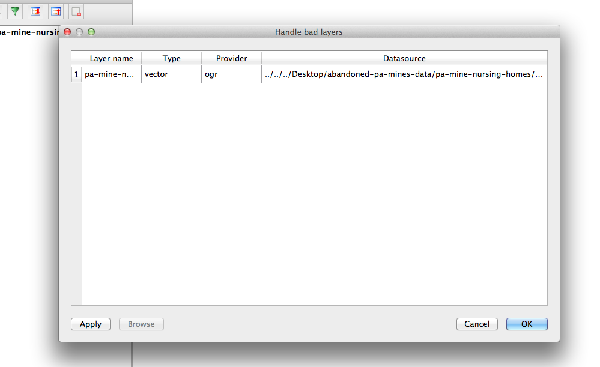

What types of data sets should be mapped, which shouldn't
Is there a geographical story?
Would a table or chart tell the story just as well?
Am I just mapping where people live?

What you can do with QGIS
Analyze geographic data
Create static maps for display
Generate files for interactive map (CARTO or leaflet.js)
Where to find geographic data: national, state, local
Alexandra Kanik tries to keep this mapping resources doc up to date. It could use some reworking and some additional resources, though, so feel free to contribute!
National data
Census shapefiles DATA.GOV National Historical Geographic Information System
State data
State government websites (such as the Minnesota Geospatial Commons)
College and university research centers (Penn State has this one for Pennsylvania)
IRE Census data
National States Geographic Information Council
Local data
Census places - Census places are defined as incorporated places, usually cities, towns, villages, or boroughs. You can read up more on that here.
Your local government should have shapefiles and other data that relate to your local region. Give them a call or visit their website. Here's the GIS office for the City of Pittsburgh.
Geocoding tools
Peter Aldhous's Refine geocoder - this is nice because it uses geocoders that are, in most circumstances, legal to use. It also geocodes your data using two geocoders so you can compare the results. And it's free! Rate limits may apply.
Census geocoder - Free but I've found it to be a little less accurate. Rate limit: 1,000 addresses at a time.
Here's a more complete list of geocoding tools and APIs
Common data types
Shapefiles
- .shp - the feature geometry
- .shx - positioning index of the feature geometry
- .dbf - the data attributes for the features. This can be opened with editors like excel.
- .prj - projection file. This can also be opened and analyzed. Especially if you're having projection issues.
GeoJSON

Delimited text layer
CSV
id, city, state, population 001, Pittsburgh, PA, 310885 002, Columbus, OH, 822092TSV
id city state population 001 Pittsburgh PA 310885 002 Columbus OH 822092PSV
id|city|state|population 001|Pittsburgh|PA|310885 002|Columbus|OH|822092
Types of GIS data
Raster

Vector
Point
Line

Polygon
What is a .qgs file?
When you save a QGIS map file, it will save as a .qgs. This file is a configuration file. It basically just references the files that you load into QGIS. IT DOES NOT HOLD ANY OF YOUR DATA. This means if you move the shapefiles you load into your map after you save it, your map will break.
So establish a working directory for each map you work on. Put your shapefiles and your map file in there and don't move them around.
This might seem like a weird, crappy way to organize things. But it's not. And here's why.
QGIS isn't perfect, and neither are you. Sometimes you come up against errors in behavior that you can explain. So your only recourse is to shut 'er down and reopen the program.
And sometimes, that doesn't work either. So you need to scrap your map file.
Now, if all of your work depended on that one .qgs file, that would suck hardcore. But since your shapefiles and data are separate files, you're totally fine.
What is a projection?
So the earth is round, right? Turns out it's not the easiest thing to make something round and three-dimensional look flat. But to hell if we don't try.
That's basically what projections are, flat representations of our round world. Lots of people have taken a stab at making the best projection, but not all projections are created equal.
Depending on the scope and span of your data, you may want to stick to a more local, granular projection. But if you're trying to show the whole world things are going to get a little wonky at some point.
Mapping projections from the 1936 Oxford Advanced Atlas compiled by John Bartholomew, cartographer to His Majesty the King


* I've collapsed this section because while it's very important to understand projections, they are also amazingly confusing and might serve only to confuse the novice map maker. Just know to return to this topic once you feel more comfortable with QGIS and displaying and analyzing geographic data in general.
Demo
In this demo, we're going to be creating a map looking at questions of transportation and equity in Washington, D.C.
Start by opening up QGIS, and clicking Project --> New.
This is a blank map.

The working directory
- Download the data
- Choose your working directory, and stick with it
A working directory is a place on your computer where you house all of your map shapefiles. Once a shapefile is added to the working directory, it should not be moved around because that can break the file path and therefore your map.
In the example above, map-lesson is the working directory.
This is what you'll see if you move layers and map files around
Adding data
We're going to be focusing on VECTOR LAYERS and DELIMITED TEXT LAYERS. These are the layers you will use most often.
Adding vectors
- Click the
 New Shapefile Layer button
New Shapefile Layer button - Navigate to your working directory
- Add
Washington_DC_Boundary-->Washington_DC_Boundary.shp - Let's pause here and play around a little with styling!
Styling
- Right-click or double-click the layer
- Select the Style tab
- You can change parts of your styles on this screen. Or click
Simple fillfor more options! - Style accordingly
Adding more layers
- Add
Potomac_poly-->Potomac_poly.shpStyle it to look a little more like a river. - Add
dc_poverty-->dc_poverty.shp - All your layers are listed in the panel on the left. Try rearranging the order.
- The new
dc_povertylayer we added is different fromWashington_DC_BoundaryandPotomac_poly— it actually contains data. In this case, it has Census estimates on poverty for every tract in Washington, D.C. - Click on the
dc_povertylayer and click the icon in the toolbar to Open Attribute Table. (You can also do this by right-clicking/control-clicking the layer name on the left.) You should see this:
icon in the toolbar to Open Attribute Table. (You can also do this by right-clicking/control-clicking the layer name on the left.) You should see this:
Advanced styling
We want to make this data show up on the map. To do this, we need to double-click the layer, like we styled it before.
But this time, click the dropdown menu at the top, where it says "Single symbol." Here we've got a number of options. Three are important:
- "Single symbol" just creates basic shapes — fixed color, lines and shapes.
- "Categorized" determines your visuals based on categorical data — for example, if you wanted to color states red or blue depending on which party won them in a presidential election.
- "Graduated" uses numerical data — for example, we're going to map Washington, D.C. tracts based on their poverty rate.
Click "Graduated." There's a dropdown menu labeled "Column" where we can select the column of data we want to determine the appearance. If you click it, you should have two options: population and poverty. Click poverty. Then, lower down, click "Classify."
After clicking "OK", you should see something like this:
You can customize this further on the properties page. For example, you can increase the number of classes you want to divide the data into. You can also choose the way QGIS divides up the data.
- The default is "Equal Interval", which divides your data into equal buckets based on the data — if your minimum is 0 and your maximum is 2000, then five buckets will be 400 wide.
- "Quantile (Equal Count)" divides up data so that each category has the same number of observations in them, even if each category's data range is different.
- "Natural Breaks (Jenks)" uses some fancy math to try to subdivide the data in a way that makes sense.
- "Pretty Breaks" works like "Equal Interval", but it rounds your breakpoints off to round numbers — so instead of a category running from 0 to 485.8, it'll run from 0 to 500. I often use this when making maps for publication.
There's something not right about our map. The poverty column we selected is just the Census's estimate of the number of people below poverty in each tract. But what we really want is the percentage of people in poverty, so we're not just mapping population. This is actually really easy to do.
Go back to the styling window and find the "Column" dropdown. Click it, and take note that our two columns are poverty and population. Click away from the dropdown, then click directly on the text where it says poverty. Now just type freely in the window so it says poverty/population! Click "Classify", and then "OK".
Geographic analysis
Add one last layer: Bicycle_Lanes --> Bicycle_Lanes.shp. This is a map of every bike lane in DC. Experiment with styling it.
Looking at this over the map of DC poverty, a pattern becomes pretty obvious — there are way fewer bike lanes in the poorer parts of D.C.
What if we wanted to quantify that? QGIS can do more than just edit the appearance of maps. It also has really robust analytical capabilities. We'll experiment with just one of those.
Click the Vector menu, then choose Analysis Tools --> Sum Line Lengths.
Here we can choose a Line layer and a Polygon layer. What we're going to do here is calculate the length of a line layer inside each element of a polygon layer. Or, in other words, we're going to find out how many miles of bike lanes are in each Census tract!
Make sure that you choose Bicycle_Lanes under "Lines" and dc_poverty under "Polygons". Then click "Run in Background", and "Close".
A new layer has been added to our map, called Line length. Look at its Attribute Table. You can see it's the same as the dc_poverty attribute table — but with two extra columns. COUNT is the number of bike lanes in each tract. LENGTH is the total length of bike lanes. So we can see that "Census Tract 1" has a bike lane length of 422.58842. You might ask: 422.58842 what? Good question! QGIS can work with a variety of units, but the most common are degrees of latitude and longitude, and meters. Thankfully, this is in meters.
Experiment with styling this new layer!
Not all data is best visualized on a map. In this case, our comparison of bike lane length and poverty rate seems tailor-made for a graph. How can we do that? Right-click/control-click the Line length layer and choose Export --> Save Features As. Here we could save this as a Shapefile — that's the default option under "Format". Instead, let's export this as a spreadsheet. Choose Comma Separated Value [CSV]. Below it, click the ... button next to "File Name" and save our new CSV in our working directory. Click OK!
Now we've saved that as a spreadsheet to our desktop for future analysis or graphing. (Note that QGIS also added this spreadsheet as a layer, too. QGIS can import spreadsheets! This is really helpful if you have a spreadsheet with geographic data that you want to join with a shapefile — but that's a lesson for another day.)
Exporting
So you've got a nice map here. What can you do with it?
There are ways to get from QGIS to an interactive map, but we're going to focus on something quicker: how to export a static image of your map.
There's two ways: one easy, and one more complex but powerful:
- The easy way: click Project > Save As Image.
- The powerful way: click Project > New Print Composer
- Name your map
- Click the
 add new map button. Draw a rectangle to fill the canvas.
add new map button. Draw a rectangle to fill the canvas. - Click the
 add label button. Draw a rectangle where you want a title.
add label button. Draw a rectangle where you want a title. - In the sidebar, type what you want the label(s) to say, and choose a font and style.
- Let's add a legend to the map. Click the
 add legend button. Click in a vacant space on our map and click OK. You should see something like this:
add legend button. Click in a vacant space on our map and click OK. You should see something like this: - On the right, uncheck where it says "Auto update." Now let's remove layers we DON'T want on our legend by clicking on them and pressing the
 button. You can also click on layers and press the
button. You can also click on layers and press the  button to change how it displays. You can even do this for individual items — for example, if you want to display poverty rate as a percentage. You might want to end up with something like this:
button to change how it displays. You can even do this for individual items — for example, if you want to display poverty rate as a percentage. You might want to end up with something like this: - You can do far more to adjust the appearance of your map — changing fonts, adding images like a CityLab logo, adding a credit line, adding inset maps, and more. We'll stop here for now, though. Click Layout > Export as Image. Pick a name and size.
- Admire your handiwork.

You mean you want more mapping?
Go to qgis.org to download the mapping program yourself.
This is only the very beginning of what's possible with QGIS. There are innumerable tutorials online, and I can also provide help if you want to explore yourself!